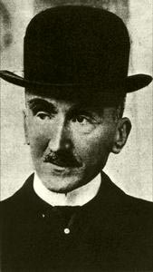

Henri Bergson nacque a Parigi nel 1859 da una famiglia appartenente a quell'ambiente ebraico di commercianti e banchieri che si era completamente inserito nella società francese. Dopo il compimento degli studi superiori si iscrisse all'Ecole Normale di Parigi, dove si laureò in filosofia e matematica. Si interessò attivamente alla scienze e soprattutto alla matematica e alla fisica, che coniuga con la filosofia della scienza e la riflessione sul problema del tempo. In particolare si entusiasmò per la teoria evoluzionistica di Herbert Spencer, al punto da non voler fare altro che perfezionare i "Primi principi" di Spencer; ma fu proprio riflettendo su queste tematiche che Bergson si accorse che il Positivismo non mantiene affatto la promessa di fedeltà ai fatti come appare ad esempio nella trattazione del problema del tempo.
Insegnò nei licei dal 1881 al 1898, anno in cui divenne professore all'Ecole Normale Supérieure; due anni dopo fu nominato professore di filosofia al Collège de France. Intanto viene pubblicata la sua tesi di dottorato, "Saggio sui dati immediati della coscienza" (1889), nella quale Bergson sostiene che il tempo è considerato dalla meccanica come una serie di istanti uno accanto all'altro: è un tempo spazializzato e anche reversibile perchè si può tornare indietro e ripetere infinite volte lo stesso esperimento. Il tempo vissuto invece è totalmente diverso poichè è caratterizzato dalla durata. Durata vuol dire che l'io vive nel presente e nel presente con la memoria del passato e l'anticipazione del futuro. Passato e futuro possono vivere soltanto in una coscienza che li salda nel presente.
Nelle opere successive analizzò la distinzione fra corpo e spirito e il meccanismo della loro unione, nel libro "Materia e memoria" (1896), le regole sul quale si fondano la commedia e la dinamica del riso , ne "Il riso" (1900).
Nel 1907 Bergson elabora una visione del mondo che sintetizza il suo pensiero, nell'opera "L'evoluzione creatrice". Come la vita della coscienza, anche la vita biologica non è una macchina che si ripete ma è creazione libera e imprevedibile, è slancio vitale (élan vital), mentre la materia non è altro che l'arresto di questo slancio. La vita è azione che di continuo si crea e si arricchisce, mentre la materia è azione che si dissolve e si logora, che si depotenzia e si degrada. L'evoluzione creatrice da origine a tre tendenze divergenti: il mondo vegetale,caratterizzato dalla fissità e dalla insensibilità, quello animale, caratterizzato dalla mobilità e dalla coscienza, e quello razionale, caratterizzato dall'inteliggenza.
Nel 1914 Bergson divenne membro dell'Accademia di Francia e nel 1921 si dimise dall'incarico presso il Collège de France per occuparsi di affari esteri, di politica e di problemi morali e religiosi; si convertì al cattolicesimo ma rifiutò di battezzarsi per non tradire la sua origine ebraica al tempo della persecuzione. Negli ultimi vent'anni della propria vita pubblicò unicamente "Le due fonti della morale e della religione" (1932), in cui distingue la morale della società chiusa, dove l'individuo agisce come parte di un tutto, adeguandosi alle regole e esaltandone gli ideali, e la morale della società aperta, il cui fondamento è la persona creatrice, che rompe gli schemi fissi della morale chiusa e si pone come scopo l'amore verso tutta l'umanità.
Nel 1927 fu insignito del Premio Nobel per la letteratura. Morì a Parigi nel 1941 durante l'occupazione tedesca.